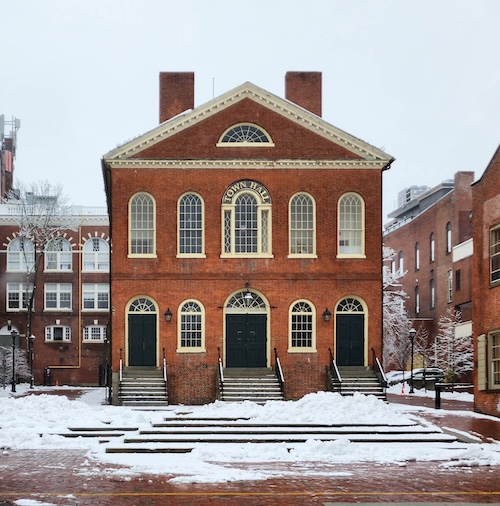

Old Town Hall and Downtown Salem
Old Town Hall has served as a civic center for Salem since the early nineteenth century and remains a key downtown landmark.
Downtown Salem is a vibrant area filled with shops, restaurants, and historic sites, making it a popular destination for both locals and tourists.